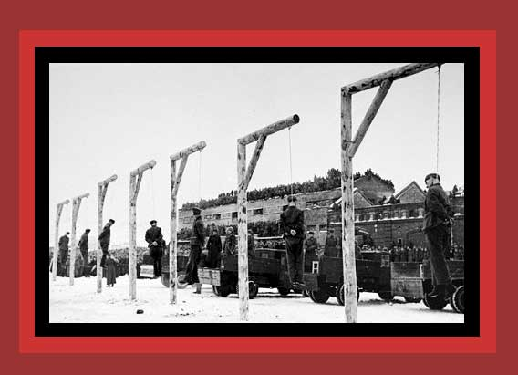

|
From 1917 to 1987, The Soviet government, really the Communist Party, murdered about 62,000,000 people, near 55,000,000 of them Soviet citizens. There are virtually no photos of this on the internet. Here is one exception. In the photo the bodies of seven Germans hang in the Smolensk city square after they were convicted in Smolensk district court for perpetrating "crimes against the Soviet people," a very general classification covering any reason for which officials wanted to dispose of a person. Because of the spectacular formality of these hangings, I suspect that the executed were German war "criminals". Documentation: see Lethal Politics. Source: United States Holocaust Memorial Museum. The direct URL for this photograph at the museum is no longer working. |